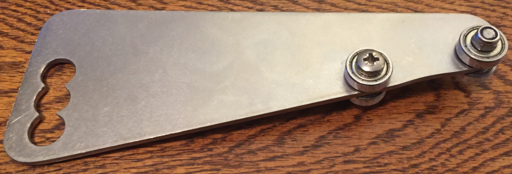
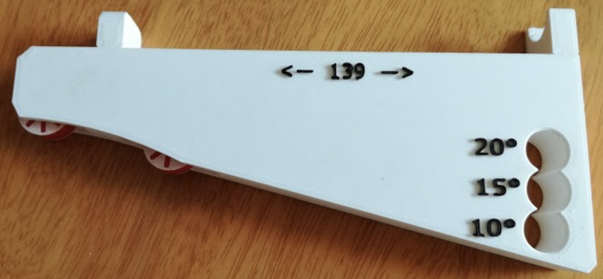
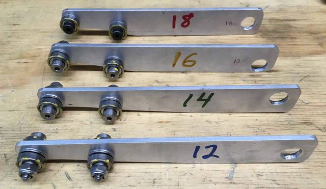

|
Because sharp enough ... usually is not |

|
HanJig
The Tormek KS-123 is a better approach to use for the KJ knife jigs.
Jan's Original Design

HanJig

JanJig, 3D Printed
In December 2015, Jan Švancara posted on the Tormek forum an idea for modifying the Tormek TTS-100 Turning Tool Setter to accommodate the setup of the universal support bar (USB) based on the a few pre-determined knife edge angles. What is truly great about this idea is that it accommodates changes in the grindstone's diameter.
Sheang Han (who goes by Tournevis on the Tormek forum) built a jig for that made of metal. His information was posted on the Tormek forum around February 2016.
Jan later posted on the Tormek forum one that he had 3D printed.
This jig is a great story for the sharpener. It shows the progression of ideas :
The generally-accepted opinion is that the sharpener should decide to use the HanJig if sharpening a few knives with a specific angle (e.g., one or two at a time at a farmer's market).
If sharpening quite a few knives with the same angle (i.e., all your wife's kitchen knives), then the platform approach will be faster overall.

Multiple HanJigs
Plans for the 4 HanJigs made by Rick Krung are linked below :
The bigger hole is for the Tormek's USB. It is 12 mm in diameter.
For the bearings, skate board ball bearings probably work acceptably, and are very cost effective (30 for about $12). You will need to drill the other two holes to accommodate a screw for a shaft for them.
These are prone to rusting if they get wet. For this reason, Rick used stainless steel ones. Each HanJig needs the following. If you are making 4, multiply everything by 4.